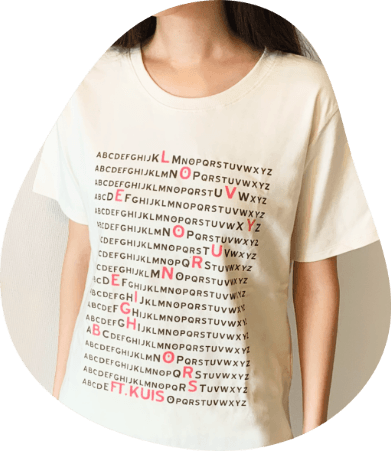
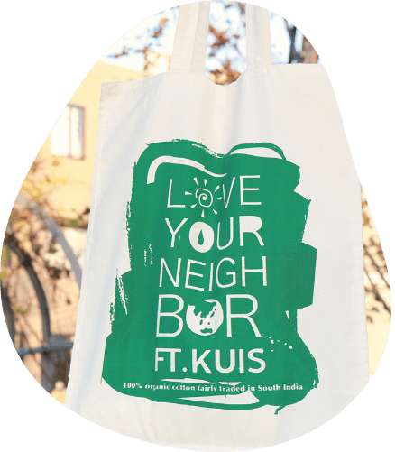
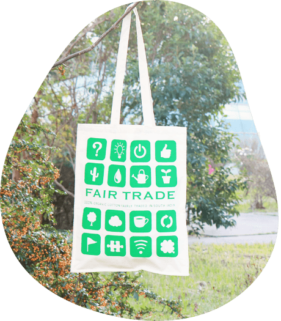

買い物で世界を変える
「フェアトレード」という意思をもった選択

「フェアトレード」とは、生産者に対して公平で安定した価格を支払い、生産者の生活向上に向けた自助努力をサポートするシステム。 世界とのつながりをもっと意識してもらおうと、「くいすぐっず」にもフェアトレード商品を導入した。
「フェアトレード」という意思をもった選択
「フェアトレード」とは、生産者に対して公平で安定した価格を支払い、生産者の生活向上に向けた自助努力をサポートするシステム。 世界とのつながりをもっと意識してもらおうと、「くいすぐっず」にもフェアトレード商品を導入した。

フェアトレードカンパニーのピープルツリーの協力を得て、2008年には、インドのオーガニック・コットンで高品質のTシャツを制作した。「言葉は世界をつなぐ平和の礎」という大学の建学理念をもとに、アルファベットの文字の海に love your neighbors という言葉を浮かび上がらせている。
Designer: 福原聖人
100% organic cotton
fairly traded in South India
南インドのK.V.Kuppam村で製作、直輸入
イギリスのフェアトレードカンパニー
Bishopston Trading Company
の協力を得て、2010年に製作。
フェアトレードを身近に感じてほしいという願いを込め、大学から芽生えるグローバルツリーをイメージ。
Designer: 浜中望帆

太陽・水・地球で eco-friendlyの意思を。
Designer: 佐藤謙・石橋璃菜・吉野花織
再び、Bishopston Trading Company
の協力を得て、
に製作。
「くいすぐっず」を入れるショッピングバッグとしても推奨し、フェアトレードの啓発をおこなった。

Designer: 頼田実来
Designer: 後藤美夏
和田ゼミ社会起業研究会では、「くいすぐっず」の販売と並行して、長期にわたってフェアトレードコーヒーやフェアトレード物産を販売するカフェも運営してきた。
に製作したフェアトレード・トートバッグには、フェアトレードコーヒーのモチーフが反映されている。
Designer: 勝田映子・福井茜